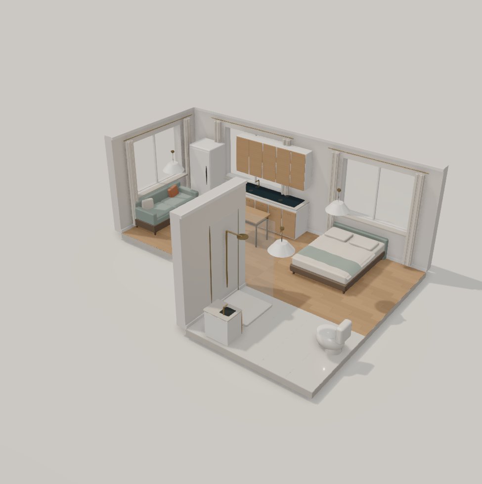

Original language · 1454 bytes

Actual editor render. Complete source
DETAIL project "A 27 m² apartment: living/kitchen, bedroom and bathroom."
DETAIL project "AT places rooms in grid cells; matching DOORS connect rooms."
DETAIL project "Append <https://...> to furniture; click it to open the product."
DETAIL project "Rendered furniture is generic. Set dimensions to your actual item."
GRID 0.5
ROOM living 8x6 AT 0,0
WALLS north east south west
DOORS east south
WINDOWS north west
SURFACE wood
LIGHT ceiling_light AT 3,5 POWER 18
ROOM bedroom 6x6 AT 8,0
WALLS north east south west
DOORS west south
WINDOWS north east
SURFACE wood
LIGHT ceiling_light AT 3,4 POWER 12
ROOM bathroom 6x4 AT 8,6
WALLS north east south west
DOORS north
WINDOWS none
SURFACE tile
LIGHT ceiling_light AT 3,2 POWER 12
LAYOUT living
. | . | . | . | . | . | . | .
. | fridge~north | . | . | . | kitchenette[2.1x0.65x2.25]~north | . | .
. | . | . | . | . | desk[1x0.6x0.74]<https://www.ikea.com/us/en/p/linnmon-adils-table-white-s29932181/> | . | .
. | sofa~west | . | . | . | . | . | .
. | . | . | . | coffee_table | . | . | .
. | . | . | . | . | . | . | .
END
LAYOUT bedroom
. | . | . | . | . | .
. | . | bed[1.5x2x0.56]~north<https://www.ikea.com/sg/en/p/malm-bed-frame-high-white-s89005264/> | . | . | .
. | . | . | . | . | .
. | . | . | . | . | .
. | . | . | . | . | .
. | . | . | . | . | .
END
LAYOUT bathroom
. | . | . | . | . | .
. | shower~west | . | . | toilet~east | .
. | . | . | . | . | .
. | bathroom_vanity~south | . | . | . | .
END
DESIGN 2 · 1153 bytes

Actual editor render. Complete source
DESIGN 2
GRID 0.5m
DETAIL project "A 27 m² apartment: living/kitchen, bedroom and bathroom."
DETAIL project "AT places rooms in grid cells; matching DOORS connect rooms."
DETAIL project "Append <https://...> to furniture; click it to open the product."
DETAIL project "Rendered furniture is generic. Set dimensions to your actual item."
ROOM living 8x6g AT 0,0g
WALLS all
DOORS east south
WINDOWS north west
LIGHT ceiling_light AT 3.5,5.5g
PLACE fridge~north AT 1.5,1.5g
PLACE kitchenette[2.1x0.65x2.25m]~north AT 5.5,1.5g
PLACE desk[1x0.6x0.74m]<https://www.ikea.com/us/en/p/linnmon-adils-table-white-s29932181/> AT 5.5,2.5g
PLACE sofa~west AT 1.5,3.5g
PLACE coffee_table AT 4.5,4.5g
END
ROOM bedroom 6x6g AT 8,0g
WALLS all
DOORS west south
WINDOWS north east
LIGHT ceiling_light AT 3.5,4.5g POWER 12
PLACE bed~north<https://www.ikea.com/sg/en/p/malm-bed-frame-high-white-s89005264/> AT 2.5,1.5g
END
ROOM bathroom 6x4g AT 8,6g
WALLS all
DOORS north
SURFACE tile
LIGHT ceiling_light AT 3.5,2.5g POWER 12
PLACE shower~west AT 1.5,1.5g
PLACE toilet~east AT 4.5,1.5g
PLACE bathroom_vanity~south AT 1.5,3.5g
END